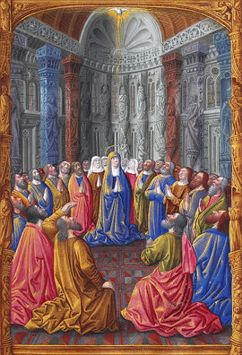

GIFT OF PROPHECY 
It allows at the faithful to speak in a simple, clear language and objective, that 
Many people think that the prophecy it means to predict the future and to reveal the events that will happen. However, prophecy is not this only, but mainly to speak on behalf of GOD:
�But whoever prophesies speaks to men for edification and exhortation and consolation�. (1 Corinthians 14, 3)
GIFT OF FAITH 
The Faith is a Gift whose seed the Christians receive on day of the Baptism. To grow and to develop with healthy consistency, it is necessary to be treated and to be care with zeal, being fed with religious instruction and biblical reading, as well as, by the persevering prayer and the sacraments.
�Therefore, faith is from hearing, and hearing is through the Word of CHRIST�. (Romans 10, 17)
The moral and spiritual crisis that it is verified at the present time, it is consequence of the decrease and loss of the faith. This fact that we witnessed in the society is the mirror of the reality than it happens in the families in a general way: the separation of couples. This because, they live a distorted image of the Divine model, this is, they reveal the humanity's sad and abominable degradation emphatically.
The Apostle Saint Paul calls this loss of faith,�Apostasy� that characterizes a total indifference and it completes lack of worry with the Fear to GOD. The result soon appears in the people's behavior, with the abandonment at the cultivation of the pity and of the charity, opening the heart at the malign and offering space to detestable "Impiety�, which transforms the people�s character, doing them with irascible procedure, individualist and savage.
When the Gift of the Faith acts, it creates the Virtue of the Faith that provides adhesion to the revealed truths, not only for believing in them, but by the trust that deposits In Who made them to exist.
This affirmation makes us to understand, that the faith is the thermometer of the person's sanctity. How much larger and more persistent to reveal, more saint will be the creature.
GIFT OF DISCERNMENT 
The experience with the charismas increases in the people the conscience of the supernatural reality, waking up them for the existence of Satan and his constant and malign influence in the generations. How much more the creatures penetrate in the mystery of GOD, they are involved by Divine light, that it drives, it teaches and it guides, in contrast with the darkness, of the Enemy's works tenebrous.
GIFT OF DISCERNING SPIRITS 
This Charisma also receives other denominations, as:"Discernment of Inspirations�, "Discernment of Different Voices" or"Discernment of Intentions".
The person that possesses this charisma is sensitized to observe the manifestations of the good spirits and of the malign, as well as it is inspired to understand in each case, the GOD�s Will.
GIFT OF SCIENCE 
It is a supernatural charisma, not acquired through studies and researches. Certain knowledge reaches the people's mind, through a revelation of the SPIRIT. Then it is a knowledge that it not went acquired by means of readings, technical and scientific courses or by the human perception, but by God�s Will exclusively.
GIFT OF STRENGTH 
It is given the people so that they don't have human respect and they have forces to flee of every occasion that it can happen the sin, practicing the virtue with sacred fervor and patience, even with spirit joy and being bearing with resignation in the presence of: scorns, damages, persecutions and of the own death before to renounce by words and works the Christian faith. This Gift also allows the preacher to make an eloquent sermon about the Word of GOD with authority and sanctity, cultivating the Tradition of the Church with fidelity and, stimulating the testimony of the truth with zeal and courage.
GIFT OF HOLY FEAR 
For people to remind always with highest reverence and deep respect of the Divine Presence and to have the sensibility of not sinning, besides fearing to make some transgression, to not displeasing the CREATOR.
GIFT OF PIETY 
It makes the people more gentle and affectionate in the treatment and in the colloquy with the LORD, stimulating the exercise of the tenderness and of an intimate love at GOD, accepting HIM as true FATHER that HE is, and OUR LADY as our MOTHER and all the people, as our brothers in CHRIST.
GIFT OF WISDOM 
It is also a Divine Gift and it doesn't refer the humanity's wisdom, it is a powerful and admirable manifestation of the SPIRIT. JESUS' Disciples were simple men and without study, they received from the HOLY SPIRIT the Gift of Wisdom and then, they have understood JESUS� Work, they have spoken in several languages, in the synagogues and in the Temple in Jerusalem, in an authentic and admirable way, enchanting all the people.
Besides the mentioned Charismas, they exist many others: Gift of Miracles; Gift of Cures; Charity; Happiness; Peace; Patience; Kindness; Kindliness; Softness; Modesty; Continence; Chastity; to evangelize (to speak and to be preacher of the word and spread the Good News); to Hear GOD; etc.
The letters of Saint Paul presents safe information about the action of the HOLY SPIRIT in the apostolic time. But in fact, the primitive Community only acquired conscience of that truth slowly, , in face the notables events and spiritual experiences that happened.
Besides the exceptional work that it executed, Saint Paul had the care of alerting the Communities guided for him, the fact of the SPIRIT not to only operate exercising extraordinary gifts, but infusing disposition and good will in the faithful, discernment, accomplishment capacity, emotional control and many others, in such a way that"being they worthy of the Divine force�, by decision of the CREATOR'S infinite kindness, they were able of executing the mission that the own The LORD entrusted them.
This providence became important and opportune, in order to avoid that also in that time, the faithful stayed waiting only miracles and supernatural manifestations, by means of the HOLY SPIRIT, during the encounters and the meetings. These Gifts that are also �Fruits of the SPIRIT� they act on the Personal Virtues, improving the action and the people's qualities so that they can to face with disposition the difficulties of every day, as well as overcoming with success, all the obstacles of the existence.